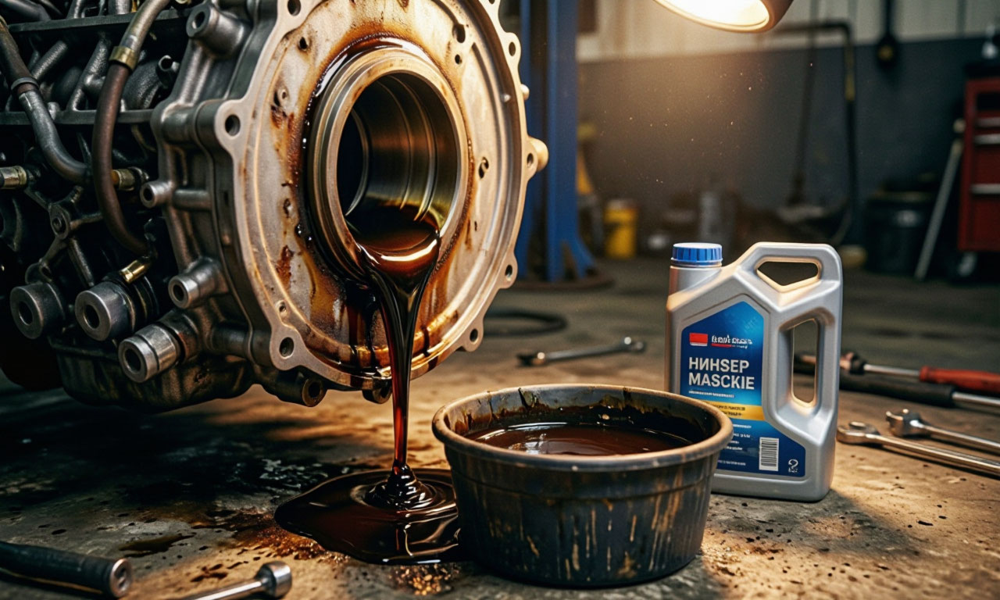

Производители часто пишут «раз в 15 000 км» или «раз в год». Но это маркетинг для идеальных условий. В российских реалиях (пробки, пыль, морозы) масло стареет быстрее.
Меняйте масло каждые 7 000 – 10 000 км или раз в год (что наступит раньше). Это дешевле, чем ремонт турбины или двигателя из-за закоксовки.
Смотрите допуски в книге эксплуатации. Не лейте «что посоветовали в гараже». Неправильная вязкость убьет мотор зимой или в жару.
Выберите марку авто и узнайте нужные допуски производителя.
Открыть подбор масла →